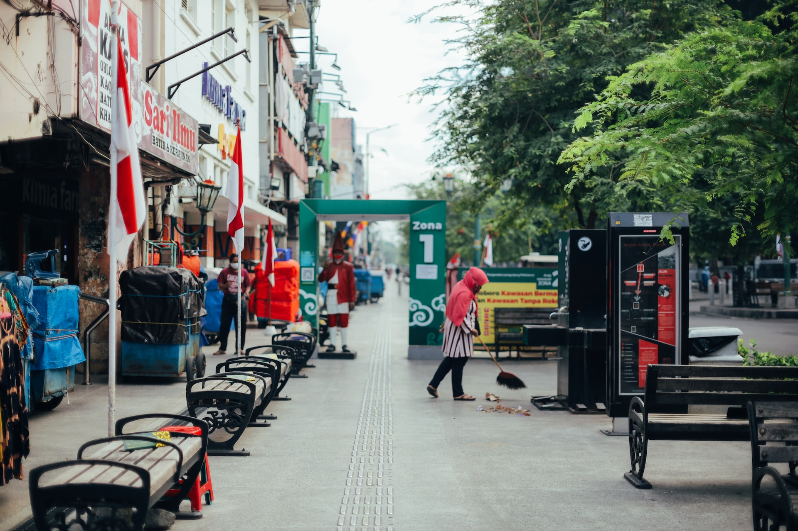

Deskripsi Yogyakarta

Yogyakarta atau dikenal oleh masyarakat setempat dengan nama Jogja
atau Yogya adalah ibu kota sekaligus pusat pemerintahan dan
perekonomian dari Daerah Istimewa Yogyakarta, Indonesia. Kota ini
adalah kota besar yang mempertahankan konsep tradisional dan budaya
Jawa.
Wisata
Terdapat banyak wisata di Yogyakarta, dan salah satu yang terfavorit
dan iconic yaitu Malioboro.
Malioboro

Jalan Malioboro adalah nama salah satu kawasan jalan dari tiga jalan
di Kota Yogyakarta yang membentang dari Tugu Yogyakarta hingga ke
persimpangan Titik Nol Kilometer Yogyakarta. Secara keseluruhan,
kawasan Malioboro terdiri atas Jalan Margo Utomo, Jalan Malioboro, dan
Jalan Margo Mulyo.